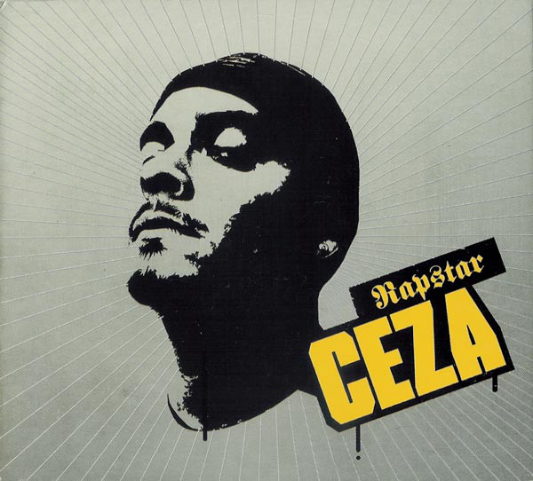

Rapstar, Ceza'nın 12 Ağustos 2004'te Hammer Müzik aracılığıyla piyasaya çıkardığı ikinci solo albümüdür. İçerisinde 22 şarkı barındıran albümün altyapılarını sonraki yıllarda Ceza'yla arası açılan Sagopa Kajmer (DJ Mic Check)'in yanı sıra Türkiye'den Mehmet Can ve Bahadır ile yurt dışından (Almanya, İsveç) prodüktörler yaptı. Albümdeki beş şarkıya klip çekildi: "Panorama Harem", "Holocaust", "Rapstar", "Neyim Var Ki" (Sagopa Kajmer ile), "Sabah Bastı Geceyi (Savaş Çocukları Part 2)". Yaklaşık 150.000 satarak en çok satan albümlerden biri oldu.
Bu makalemizde Rapstar albümünün en çok dinlenilen 3 müziğini paylaşacağız, iyi dinlemeler.